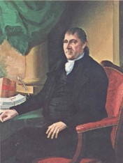

by
Tricia A. Barbagallo
John Tayler was born in New York City in 1742. He was the son of William and Nancy Condit Tayler. Tayler left New York in his late teens to trade supplies at British forts on the northern frontier. Using Albany as a base, he serviced Oswego, Fort William Henry, outposts along Lake Champlain, and also on the Mohawk River. A grandson noted he could speak "Indian Tongue" and that he kept a store on Lake George.
In 1764, Tayler married Margarita Van Valkenburgh, the daughter of an Albany carpenter. Their marriage produced no children. Instead, they adopted Margaret Vernor, the infant daughter of Margarita's sister, the late Eva Van Valkenburgh Vernor.
These Taylers settled on a farm at Stillwater. He grew hemp and flax, kept cattle, and began a lumber business. Tayler's farm produced smoked meats, rope, and potash. The farm prospered and enabled him to stock his store at Ballston (Ballston Spa) and his other enterprises as well. He also offered more exclusive items obtained from merchants in London, New York City, and Philadelphia.
In 1777, the threat of British attack forced Tayler to abandon his farm and move his family to safety in Albany where he was known as a storekeeper as early as July 1776. The Battles of Saratoga occurred near his farm. The British used the Tayler house as headquarters. He never returned to Saratoga and the war thrust him into the public service. He represented first Saratoga and then Albany on the county Committee of Safety and on the Committee for Detecting and Defeating Conspiracies - where he worked to identify and suppress loyalists. Tayler further supported the war by using his farm and businesses to supply meat for the Continental army. General Philip Schuyler appointed him Clothier General of the Northern army in 1776.
By 1779, John Tayler had become an Albany mainstay with his third ward property prominently configured on city assessment rolls. By 1790, he had relocated to the south side of State Street where he lived until his death.
In 1776, he represented Albany County in the Third and Fourth Provincial Congresses. He was elected to the first New York State Assembly in 1777 and served through 1781. In 1802, he was elected to the State Senate and served until 1813. He was an Antifederalist and a political ally of Governor George Clinton.
Following the war, he was involved in diplomatic negotiations with the Iroquois. He served on a number of boards and was active in many public enterprises. He was a member and officer of St. Peter's Church. He also acquired extensive real estate in Albany and beyond.
Margaret Tayler died in 1796. Their adopted daughter, Peggy, and her husband Dr. Charles De Kay Cooper and their family, now became his kinship network.
Although into his fifties, Tayler's political career was on the rise. In 1793, he was appointed city Recorder (deputy Mayor) and in 1797, he was appointed justice of the Court of Common Pleas. During much of that time, he retained his seat in the New York State Senate - serving as president of the Senate in 1811.
In 1800, his first ward household included two boys and perhaps a younger adult couple. As in 1790, it was served by five slaves.
Tayler was elected lieutenant governor under Daniel D. Tompkins in 1813 and served until 1817 when he was elected to the same office under De Witt Clinton. He served until 1822. In 1817, he was acting governor for four months when Tompkins resigned to become vice president.
John Tayler died at home at 50 State Street in March 1829. His will left extensive property and money to his daughter Peggy and her family. He also made cash bequests to his extended family and to the children of his political allies.
notes
 The life of John Tayler is CAP biography number 1383. This profile is based on community based resources and on an analysis of the John Tayler Papers, Charles De
Kay Cooper Papers, and the Gertrude Lansing Papers at the New York State
Library; and the John Tayler Papers at the New York Public Library. Tayler
is the subject of a larger work by the author.
The life of John Tayler is CAP biography number 1383. This profile is based on community based resources and on an analysis of the John Tayler Papers, Charles De
Kay Cooper Papers, and the Gertrude Lansing Papers at the New York State
Library; and the John Tayler Papers at the New York Public Library. Tayler
is the subject of a larger work by the author.
His mother is said to have been the granddaughter of James Clinton of New Britain, Ulster County (now Orange County). James Clinton settled in New York Colony in 1729 with his brother, Charles Clinton, the father of Governor George Clinton (1739-1812), suggesting Tayler and Clinton were most likely second cousins. Family history notes James Clinton's daughter, Mary, married into the Condit or Condy family, and had a daughter named Nancy. Nancy later married William Tayler.
His grandson was John Tayler Cooper. See the John Tayler Papers in the New York State Library, Albany, Box 1, Folder 1. Cooper wrote a biography of his grandfather based on conversation he recalled.
Copy of a portrait by Ezra Ames about 1816. Collection of the Albany Institute of History and Art.
first posted: 4/20/03; last revised 6/14/16